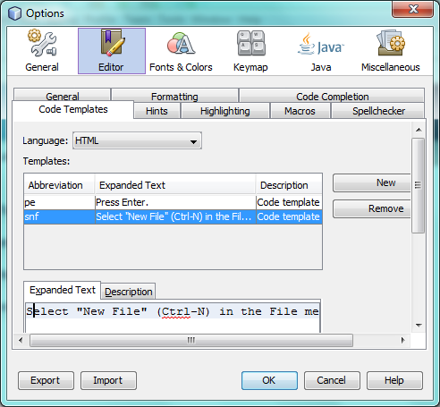
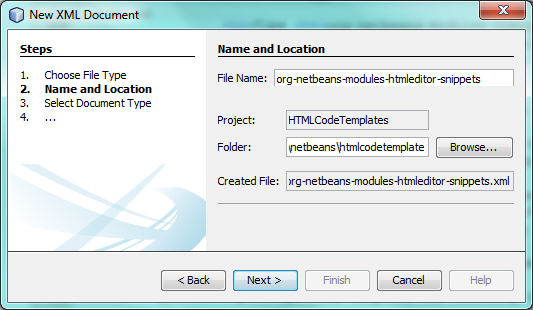

Apache NetBeans
Apache NetBeansLatest release
NetBeans Code Template Module Tutorial
| This tutorial needs a review. You can edit it in GitHub following these contribution guidelines. |
This tutorial demonstrates how to create a NetBeans module that provides code templates. Changes can be made by the user in the Options window, either to customize the existing code templates or to add new ones:

To provide this functionality, you will not need to use any Java code at all. As shown in this tutorial, you will only need to provide an XML file that defines your code templates, by registering it in your module’s layer.xml file.
For troubleshooting purposes, you are welcome to download the completed tutorial source code.
Setting up the Module Project
Before you start writing the module, you have to make sure you that your project is set up correctly. The IDE provides a wizard that sets up all the basic files needed for a module.
-
Choose File > New Project (Ctrl+Shift+N). Under Categories, select NetBeans Modules. Under Projects, select Module. Click Next.
-
In the Name and Location panel, type
HTMLCodeTemplatesin the Project Name field. Change the Project Location to any directory on your computer. Click Next.
-
In the Basic Module Configuration panel, type
org.netbeans.htmlcodetemplatein Code Name Base. Click Finish.
The IDE creates the HTMLCodeTemplates project. The project contains all of your sources and project metadata, such as the project’s Ant build script. The project opens in the IDE. You can view its logical structure in the Projects window (Ctrl-1) and its file structure in the Files window (Ctrl-2).
Creating the Code Templates
In this section, you create the code templates for HTML files.
-
Right-click the
org.netbeans.modules.htmlcodetemplatenode and choose New > Other > XML > XML Document. Click Next.
1.
Type org-netbeans-modules-htmleditor-snippets and in "Folder" browse to the "htmlcondetemplate" folder:

Click Next and then click Finish.
-
Replace the default content of the
org-netbeans-modules-htmleditor-snippets.xmlfile with the following:
<?xml version="1.0" encoding="UTF-8"?>
<!DOCTYPE codetemplates PUBLIC "-//NetBeans//DTD Editor Code Templates settings 1.0//EN" "https://netbeans.org/dtds/EditorCodeTemplates-1_0.dtd">
<codetemplates>
<codetemplate abbreviation="snf" xml:space="preserve">
<code><![CDATA[Select "New File" (Ctrl-N) in the File menu]]></code>
<description><![CDATA[Code template for selecting "New File".]]></description>
</codetemplate>
<codetemplate abbreviation="pe" xml:space="preserve">
<code><![CDATA[Press Enter.]]></code>
<description><![CDATA[Code template for clicking the "Enter" key.]]></description>
</codetemplate>
</codetemplates>You now have two code templates. The first will be shown when "snf" is typed, followed by the expansion key, while the second requires "pe" to be typed, prior to the expansion key being pressed.
Declaring and Registering the Code Templates
Code templates are registered in the layer.xml file for the MIME type to which they apply.
-
Right-click the
org.netbeans.modules.htmlcodetemplatenode and choose New > Other > Module Development > XML Layer. Click Next and then click Finish.
-
Replace the content of the layer.xml file with the following:
<?xml version="1.0" encoding="UTF-8"?>
<!DOCTYPE filesystem PUBLIC "-//NetBeans//DTD Filesystem 1.2//EN" "https://netbeans.org/dtds/filesystem-1_2.dtd">
<filesystem>
<folder name="Editors">
<folder name="text">
<folder name="html">
<folder name="CodeTemplates">
<file name="org-netbeans-modules-htmleditor-snippets.xml" url="org-netbeans-modules-htmleditor-snippets.xml"/>
</folder>
</folder>
</folder>
</folder>
</filesystem>Building and Installing the Code Templates
Now we need to think about installation and distribution. In the first section below, we install the code templates, next we create an NBM file and examine distribution channels.
Trying Out the Code Templates
Install and try out the code templates, by following the steps below.
-
In the Projects window, right-click the
HTMLCodeTemplatesproject and choose Run. The module is built and installed in the target platform. The target platform opens so that you can try out your new module. The default target platform is the installation used by the current instance of the development IDE.
-
Look in the Options window and notice your two code templates:
-
Open an HTML file and type "snf". Press the Tab key and notice that the abbreviation expands. Do the same for "pe".
Creating a Shareable Module Binary
An NBM file is the binary version of the module that provides the code templates. Below, using one menu item, we create the NBM file.
-
In the Projects window, right-click the
HTMLCodeTemplatesproject and choose Create NBM. The NBM file is created and you can view it in the Files window (Ctrl-2).
-
Make the module available to others via, for example, the Plugin Portal.
-
The recipient can install the module by using their IDE’s Plugin Manager. They would choose Tools > Plugins from the main menu. Send Us Your Feedback
Next Steps
For more information about creating and developing NetBeans modules, see the following resources: